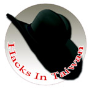

第四屆台灣駭客年會 (Hacks In Taiwan 2008)

● 活動時間：7/19(六)-7/20(日)
● 活動地點：台灣科技大學 國際會議中心
● 活動網址：https://www.hitcon.org/
一年一度的台灣駭客年會，即將在 7/19 起一連兩天，假台灣科技大學國際會議中心舉行。台灣駭客年會 (Hacks In Taiwan) 一直是由非營利、非商業性的 "CHROOT.ORG" 資安技術社群主導，每年安排各項資訊安全技術議題，以輕鬆活潑的方式，交換並討論國內外最新的資安議題，讓台灣擁有高超技術的駭客們匯集一堂，發表安全技術論文，面對的交換經驗，以及自由的聊天。另外在會議進行的同時，會場也舉辦了網路攻防競賽 (Wargame)，提供真實的網路環境，讓參與人員能夠盡情發揮，期望在活動中學習，並印證自己的能力。
今年活動安排 CardMagic、Gasgas、Tim Hsu、Roger、PK、tt、Unohope、Trueman 及 Kelp 等重量級人物與會分享資訊安全議題。其中 Gasgas 為國內知名骨灰級駭客；Tim Hsu 為國內第一個以資安攻防技術為主題的 chroot 讀書會召集人，也是 HIT 的創辦人；Roger 為大砲開講網站站長, Malware-Test Lab 創辦人，一個背負著全台網站安全的男子，不畏強權，堅持為使用者把關。兩天的議程內容涵蓋作業系統安全性、惡意文件偵測、有線與無線網路安全、Web 安全威脅到資料外洩等多元面向。中研院資訊所自由軟體鑄造場的曾義峰先生今年受主辦單位邀請，於活動中分享『Firefox Extension Malware』，討論 Firefox 惡意的延伸套件，並展示惡意套件可能的攻擊手法。
曾義峰先生目前專注 Web 安全性研究，分析 SQL Injection、XSS 及 CSRF 等常見的網路攻擊方式。其最近發表的文章：誰在偷看我的電子信箱；避免隨身碟防毒，只需一招。
歡迎有興趣的朋友，一同來共襄盛舉！